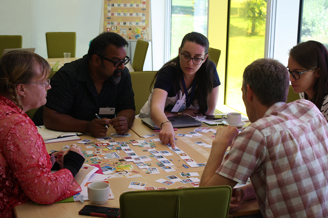

Activities
The principle behind the tools is to support students to represent and communicate the student journey from their own perspectives. This lends itself to several different activities, including as a means to feedback and dialogue with staff, and as a means to reflection on their approach and goals. Our understanding of this is evolving as we devise and trial different activities using the tools. We are very interested to see how others use them too.
Students and staff workshops
The printed posters and cards are designed for discussion and work well with small groups. The tools are very flexible.
An approach that we have found useful has been for each small group to include a student who represents their journey using the tools. Staff can discuss this with the student during the process to gain insight, and can add additional notes to the journey representation with their reflections.

Student reflection activities
A key point raised in the design process was the potential for the tools to engage students in reflecting on their journeys. This could be an individual activity, but journeys can also become a shared artefact for discussion with tutors or peers.
The learning outcomes we suggest for these activities include to be able to:
- Communicate your experience of being a student.
- Reflect on the way in which they deal with challenges during study.
- Recognise and celebrate personal successes
- Recognise areas you found challenging and identify ways of overcoming similar challenges in the future.